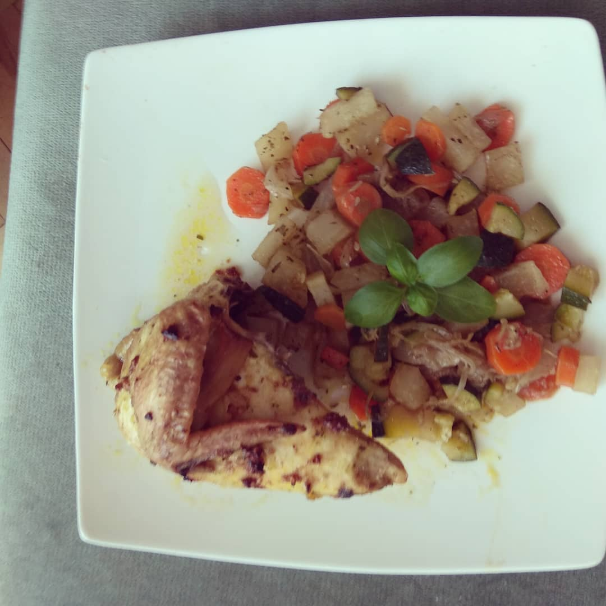

Pečené kurča podľa @evkarybakova — Normy Jedál
Pečené kurča a k tomu netradičná príloha. Dusená mrkva s kalerabom a cuketou. Dochutene sójovou omáčkou a provensalskymi bylinkami
#kurca #pecenekurca #dusenazelenina #obed #varimrada #laskaidecezzaludok